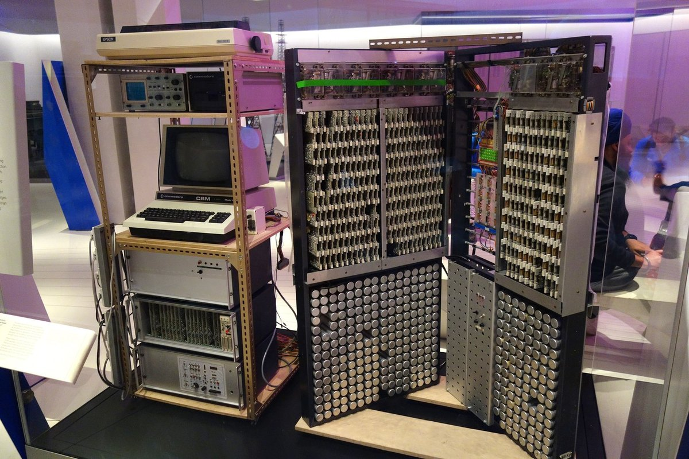
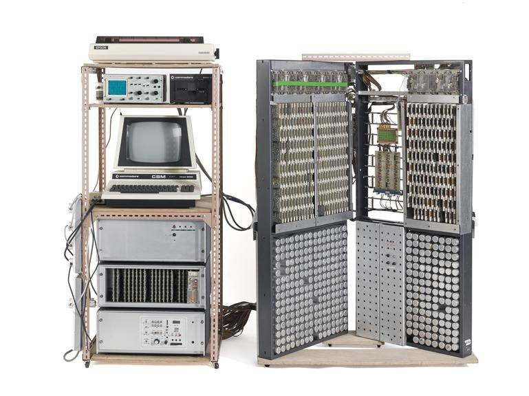

Ishiguro Electronic Storm Surge Model
A room-sized electrical analog of the North Sea — voltage stands in for water height — driven by an early-1980s Commodore desk computer and read off an oscilloscope

Overview
Following the North Sea flood of 1953, the UK government set up the Waverley Committee and tasked the National Institute of Oceanography with the scientific investigation of storm surges. In 1957 the Japanese oceanographer Shizuo Ishiguro, who had been developing analogue methods for predicting ocean surges, joined the NIO (first on a UNESCO fellowship, later as a permanent employee) to apply his work to the North Sea. Over the following years he built a physical analogue computer that represented the North Sea as a grid of roughly 80 nodes, each pair wired together so that the flow of electricity between them stood for the flow of water. The model combined resistors, capacitors, and inductors — encoding the difference in water height, fixed features like coastlines and sea depth, the Coriolis force of the Earth's rotation, and time-dependent tidal forces from the Moon and Sun — with signal generators providing the changing inputs. The machine stood about 1.8 m (6 ft) tall across two panels, wired in a shallow V-formation so modellers could reach the front and back of the grid. It was used at the NIO from 1960 until about 1983 to predict surge height and timing and to assess sea-wall and coastal-defence needs. Its interface is the whole point: by its later years a Commodore CBM 8032 desk computer with 5.25-inch floppy drives set up and fed parameters into the grid, while the result appeared as a live trace on an Advance Instruments OS-240 oscilloscope and was recorded photographically. After Ishiguro retired in 1983, improving digital computers displaced analogue simulation; the machine was acquired by the Science Museum, London, and today sits in its Mathematics Gallery on modelling the seas.
Deep dive
Most interfaces ask a user to describe a world in symbols and then trust the machine to compute it. Ishiguro's machine did the opposite: it was a scale model of the North Sea, made of electronics instead of water. Voltage and current mimicked height and flow; resistors stood in for the difficulty of moving water between points; capacitors and inductors introduced the inertia and lag of a real sea; signal generators supplied the tides and the storm. To interrogate the model you did not enter an equation — you poked at its physics. That makes it one of the collection's purest examples of an interface where the representation and the thing represented share a structure, an idea that later becomes the justification for everything from physical mock-ups to tangible computing.
The North Sea was discretised into approximately 80 nodes — far coarser than any modern numerical surge model, but enough to resolve the broad movement of a surge southwards across the basin. Each node was an electrical junction whose behaviour depended on its neighbours through wire, and the whole grid was hand-built across two tall panels. The V-formation wiring let a scientist walk behind the array to trace or patch connections. This is a remarkable inversion of scale: a body of water hundreds of kilometres across reduced to a furniture-sized lattice of components, with the topology of the wiring holding the coastline and the sea depth. The model's accuracies and its blind spots were literally built into the wiring, and could not be adjusted without reaching into it.
In its later years the machine acquired a strange digital front end: a Commodore CBM 8032 — a PET-line desk computer with a monochrome screen and calculator-style keyboard — together with Commodore 2031 5.25-inch floppy drives. Rather than a graphical simulation on the screen, the microcomputer drove and parameterised the analog grid, setting up the time-dependent inputs and tidal conditions, while the screen stayed a text and command surface. The pairing is an accidental portrait of the analog-to-digital transition: the model itself remained stubbornly analog, but the human interaction around it migrated to a personal computer. Users were therefore fluent in two interfaces at once — a text machine for setup and a physical circuit for the answer.
The machine did not print a table of predicted water levels. The surge appeared as a live waveform on an Advance Instruments OS-240 oscilloscope, and the result was captured by photographing the screen. That is a profoundly different interaction from a saved digital file: the output is a transient signal, observed in real time, whose permanence depended on a camera. Reading the machine was an instrument-reading skill — watching a trace rise and fall, judging the maximum tidal height and the time at which it would occur. The oscilloscope made the sea legible as a squiggle of voltage, and the photograph made that squiggle into a record. The museum cares about this because it collapses input, computation, and output onto instruments of observation rather than windows, dialogs, and files.
Digital computers capable of solving the flow equations existed in the 1960s, but Ishiguro argued that the analog approach was more flexible and sidestepped the discretisation problems of finite time steps — continuous electronics had no step size to get wrong. His position lost the argument to Moore's law: as digital simulation became faster and cheaper, numerical models displaced the physical grid, and the machine was retired around the time Ishiguro left in 1983. It survives as an artifact not because analog won, but because it captures a road the field did not take — a computing practice in which the model, the input device, and the output device were distinct instruments arranged around a physical simulation rather than fused into a single screen.
The Ishiguro machine expands what counts as an interface. Its input surface is a microcomputer and a patchwork of wires; its display is an oscilloscope; its medium is a hand-built electrical analogue of the sea. It shows that before the universal screen, technical interaction could be specific, physical, and literally shaped like the problem — and that such specificity had real virtues (speed, continuity, immediacy) as well as real limits (fragility, hand-built bias, no replay). It also quietly records a turning point, when the front of an analog instrument came to wear a personal computer, a hybrid too rare to see in most hardware histories.
Team & pioneers
- Shizuo Ishiguro (1919–2007). Japanese oceanographer who joined the UK National Institute of Oceanography in 1957 on a UNESCO fellowship; conceived, built, and operated the analogue storm-surge machine, and continued work at home after retiring in 1983.
- UK National Institute of Oceanography (NIO). Now the National Oceanography Centre; responsible after the 1953 North Sea flood for the scientific study of storm surges, and the institution that hosted and used the machine at Wormley.
- Waverley Committee. UK government committee formed after the 1953 flood that helped set the programme of storm-surge investigation behind the machine's construction.
Media

Sources
- Wikipedia — Ishiguro Storm Surge Computer (1953 flood and Waverley Committee; Ishiguro joins NIO 1957; ~80-node electrical grid; Coriolis and tidal forces; CBM 8032 + 5.25" drives; OS-240 oscilloscope output recorded photographically; retired ~1983)
- Science Museum Group Collection — Electronic storm surge modelling machine (object co8428222 / 2015-15): two mesh panels in a V-formation, ~1.8 m tall, CBM 8032 and Commodore 2031 drive, OS-240 oscilloscope
- Science Museum Group Journal — Claire Kennard, "Understanding storm surges" (2016), on the machine's display and context
- Wikimedia Commons — File:Electronic ocean model, built by Shizuo Ishiguro, 1960-1983 - Science Museum, London - DSC05546.jpg (CC0)